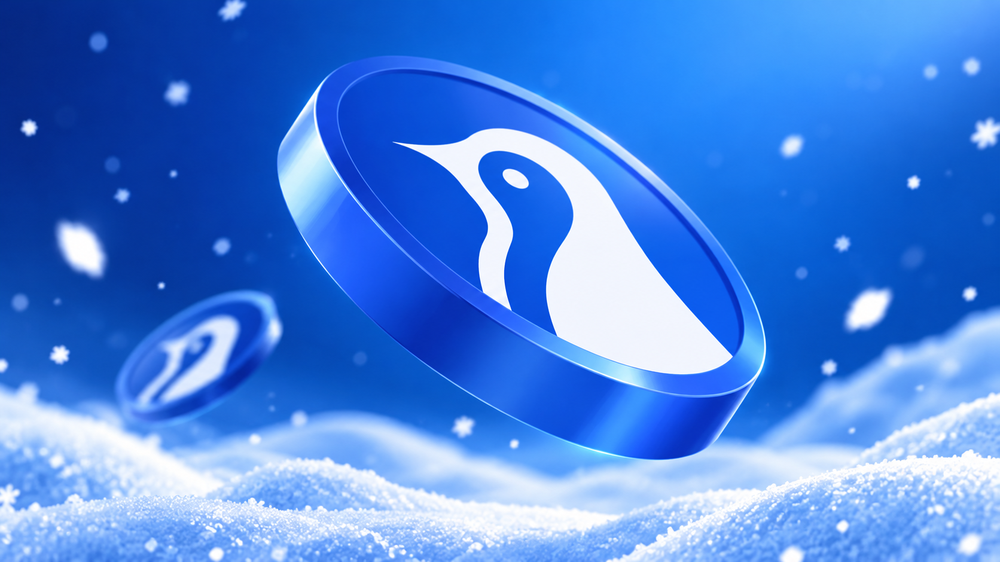

Antarctic Wallet
- Managed, mentored, and educated 300+ global Ambassadors to strengthen product knowledge, community engagement, and campaign participation.
- Developed onboarding materials, operational guidelines, and SOPs to ensure all Ambassadors fully understood the vision, features, and programs of Antarctic Wallet.
- Monitored Ambassador performance using KPIs such as community activity, content creation, referrals, and campaign contributions.
- Conducted regular training sessions, mentoring, and Q&A workshops to enhance communication skills, product knowledge, and leadership capabilities.
- Coordinated daily tasks, campaign assignments, and activity reporting across the Ambassador program.
- Served as the primary liaison between internal teams and Ambassadors.
- Improved Ambassador retention through reward programs, recognition initiatives, and performance evaluations.
- Moderated communities on Telegram.
- Collected community insights and feedback to support product development and marketing strategies.
- Collaborated with marketing, partnerships, and product teams to execute campaigns and expand global community reach.